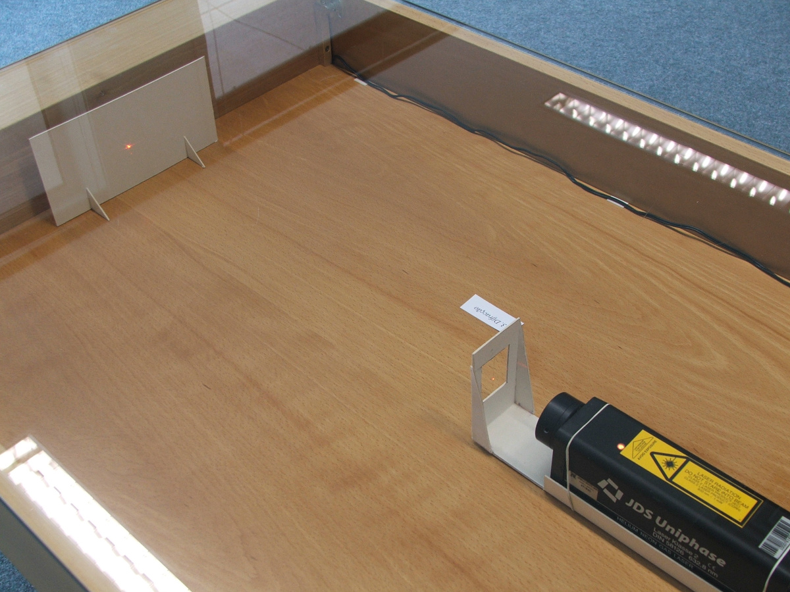

Diffraction of light
The experiments used by Fresnel as strong arguments in favor of the wave theory of light (by the end of the XVII century and beginning of the XIX century) were the interference when light goes through two slits and the diffraction of light.
When two waves emitted from two point sources are combined they produce an interference pattern: fixes regions where the resulting wave has maximum and minimum values. In the case of light, those interference patterns are observed as bright and dim regions.
Diffraction is the tendency of waves to "go around" obstacles. At the boundary between light and shadow projected by an object one can observe interference patterns which are the result of the diffraction of light.
Those two phenomena: interference and diffraction are a signature of the oscillatory nature of waves and would not occur in the case of beams of particles. Therefore, interference and diffraction of light are proofs of its wave nature.